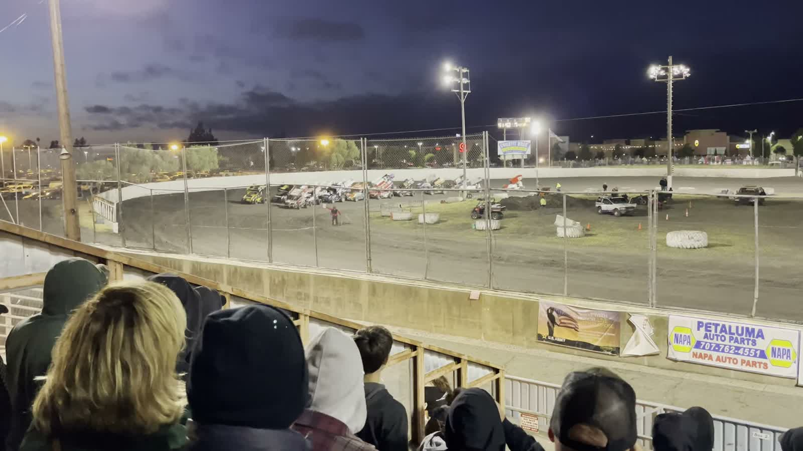

WORKSPACE / VIDEO ANALYSIS
Exposure review
Follow the cars. Find the moments that matter.
Baylands Raceway / Practice laps1920 × 1080 · 10 SEC

● UNANALYZED CLIPSession timelineCLICK A FRAME TO REVIEW
00:0000:02.5000:0500:07.5000:10
CARS
Run analysis to populate detections
SPONSORS
Add a logo reference to find matching frames
Direction A · Static design preview, no analysis run. Compare direction B → · Open working app →